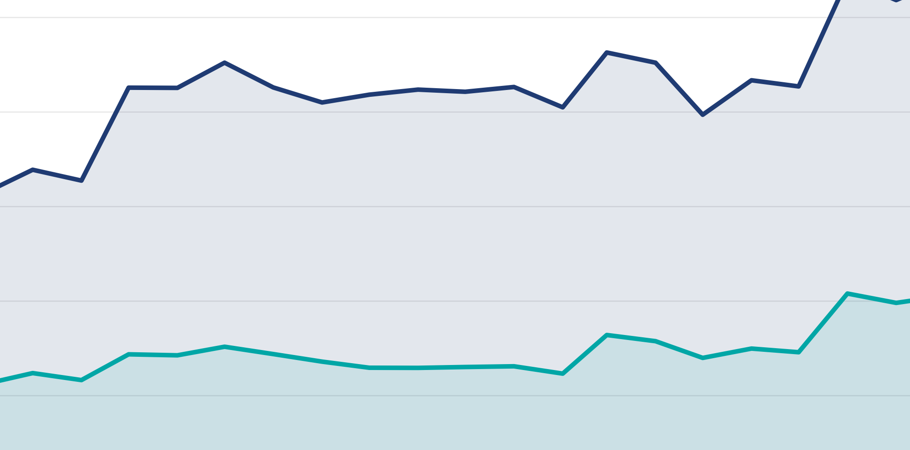
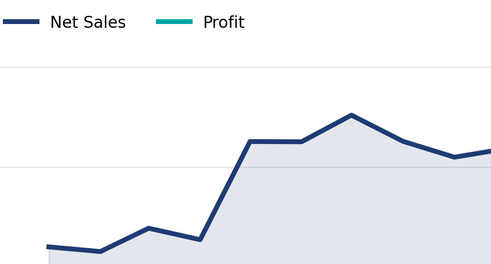
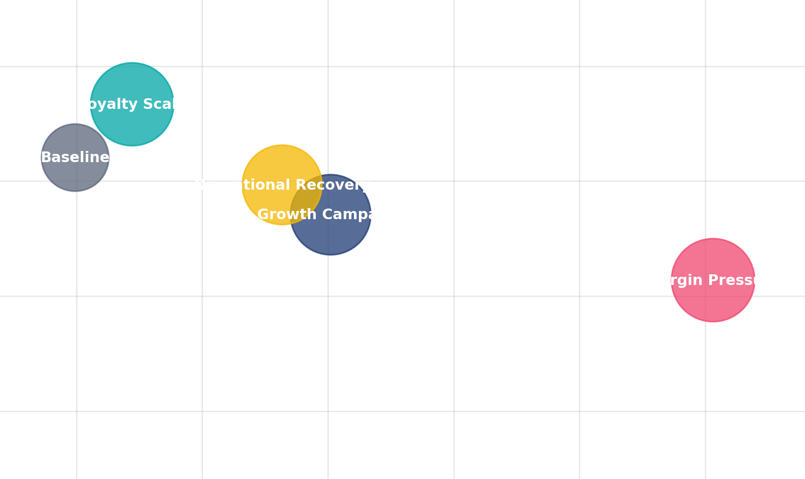
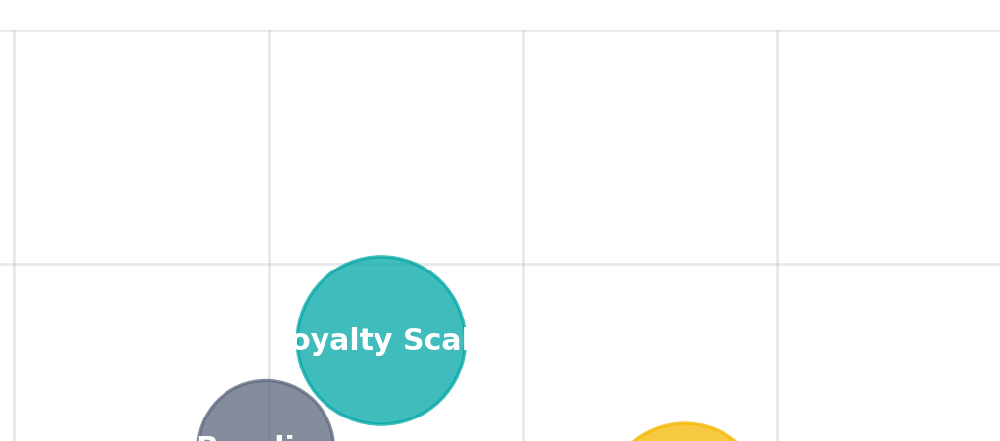
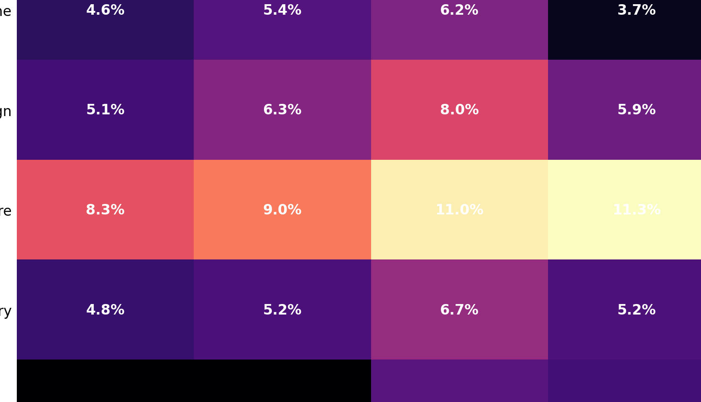
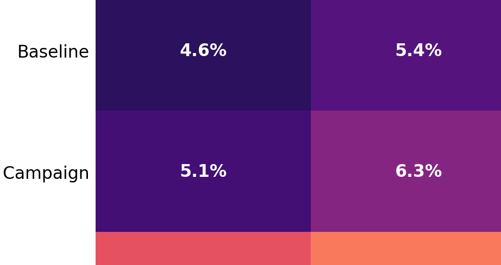
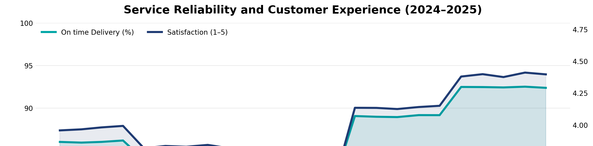
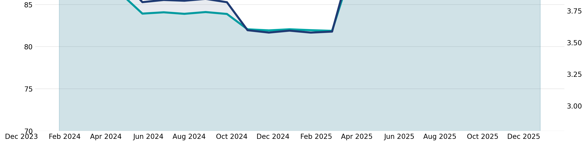
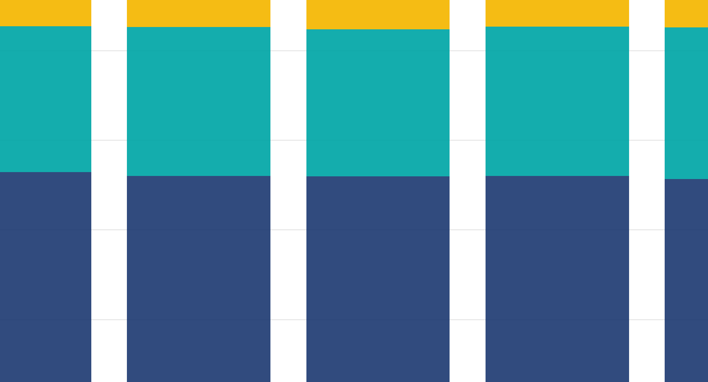
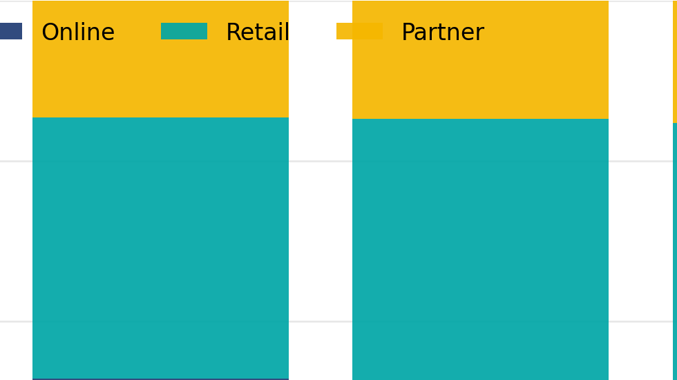

{kind=link}
Project context
Stakeholders often ask one simple question: “Are we growing?” The problem is that growth can look healthy while the underlying commercial engine becomes fragile. This dashboard is designed to answer a better question: “Are we growing in a way that stays profitable and repeatable?”
The story intentionally follows a realistic cycle. The organisation pushes growth, discounts increase to maintain volume, profit quality weakens, returns rise, and operations become the turning point for recovery. The final stage shows the stabilisation pattern you want: healthier margins, better service reliability, and stronger channel balance.
What this dashboard is optimised for
- Fast executive scanning of revenue, profit, and margin quality
- Early warning signals: discount intensity and return-rate drift
- Operational levers tied to commercial outcomes
- Channel strategy decisions, backed by evidence
Overview
Inspired by structured Power BI case studies, each section below explains one part of the dashboard narrative, with smaller supporting screenshots that make the page feel clean and easy to scan. :contentReference[oaicite:1]{index=1}
1) Growth was strong, but profit did not scale at the same quality
The first view is deliberately simple: net sales and profit over time. It helps a stakeholder understand the direction of travel in seconds. If both lines move up together, growth is likely sustainable. If sales rise while profit flattens or dips, it signals margin pressure, discount leakage, operational costs, or returns.


Interpretation
This is the moment where leadership usually realises: revenue growth is not the full story. It sets up the need for a second lens: what is causing margin quality to weaken?
2) Discount intensity increased and margin compressed
The discount versus margin visual makes the commercial tradeoff obvious. During the growth push, discounting can rise faster than the organisation realises. This is why the dashboard treats discounts as a first-class KPI, not a footnote. When discount intensity climbs, you either need higher retention and repeat purchase to offset it, or you need tighter guardrails.


Actionable takeaway
Introduce discount guardrails tied to margin targets. If discounting must increase, require proof of incremental volume, retention lift, or reduced acquisition cost.
3) Returns amplified the margin pressure and exposed regional risk
Returns behave like a silent tax on growth. When returns rise at the same time as discounting, realised value drops twice: you sell at a lower net price and you lose a portion of the transaction altogether. This is why the dashboard surfaces return-rate drift by region, so teams can investigate root causes quickly.


What to investigate next
- Product categories driving returns during the high-discount phase
- Shipping mode or fulfilment delays correlated with returns
- Regional campaign strategies that attract low-quality demand
4) Operational reliability became the recovery lever
The dashboard intentionally links operational performance to commercial outcomes. When on-time delivery improves, satisfaction typically improves as well. That improvement reduces returns, increases repeat purchase, and lets the business reduce discount dependency over time.


Why this matters to leadership
Operations is not only a cost centre. It is a commercial lever. When reliability improves, margin quality can recover without needing aggressive pricing tactics.
5) Channel mix matured into a stronger model
The channel mix view is about sustainability. Strong performance is rarely dependent on a single channel. The later phase indicates a more stable balance. In a real Power BI dashboard, this is where leaders decide where to allocate budget, which channels to scale, and which ones to treat cautiously.


Decision support
- Scale the channels that retain customers and preserve margin
- Review channels that require deep discounts to hold volume
- Use mix shifts as an early indicator of strategy drift
Summary: what this dashboard proves
Executive conclusions
- Revenue growth can hide margin compression
- Discount intensity is a leading indicator, not an afterthought
- Returns amplify margin pressure and show where quality demand breaks
- Operational reliability supports satisfaction and profit recovery
- A healthier channel mix improves stability over time
Recommended next steps
- Introduce margin-based discount guardrails and monitor leakage
- Create a returns root-cause view by product, region, and shipping mode
- Track on-time delivery as a commercial KPI
- Adopt a channel strategy scorecard: margin, retention, and returns risk